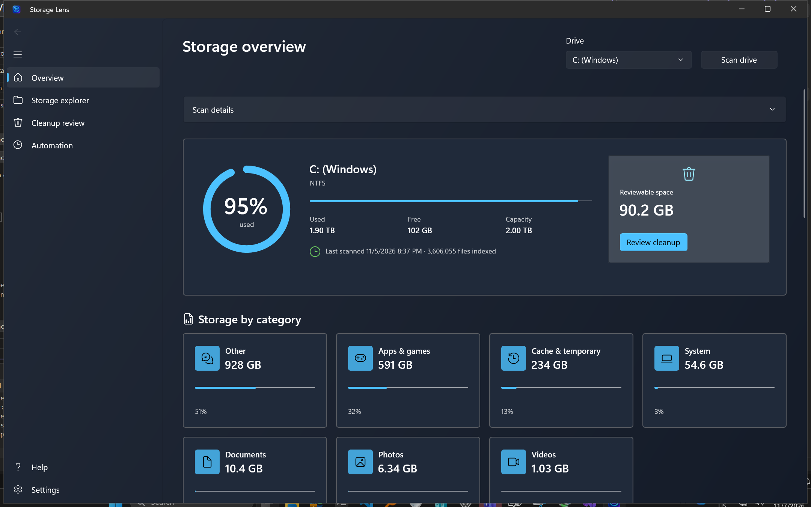
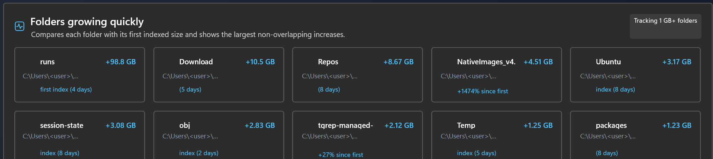

Starts at first appearance
When a folder is first indexed, StorageLens records its starting size and identity as the baseline.
StorageLens turns drive usage into a clear, explorable map. Track cumulative folder growth, find large files, and review cleanup opportunities before moving anything to the Recycle Bin.

Folder growth, measured properly
Comparing only the latest scan with the previous one can hide a problem. StorageLens remembers the first time each folder appeared, so cumulative growth stays visible even after a quiet day.

When a folder is first indexed, StorageLens records its starting size and identity as the baseline.
Growth remains visible across quiet days, so a folder that gradually gained tens of gigabytes does not vanish from the list.
Deleted baselines are removed. If the same path is recreated as a different folder, a new baseline is created.
See growth on Overview and in Storage Explorer, with optional thresholds and local notifications.
Everything needed to organize storage
See used and free capacity, category totals, reclaimable space, largest folders, and largest files in one glance.
Drive clarityNavigate the full folder tree, filter by category, search, sort, and inspect each item’s path, size, type, and growth.
Full drill-downReview temporary files, old downloads, package caches, duplicates, and larger candidates with explicit safety labels.
Recycle BinEnable idle indexing, low-space checks, folder-growth alerts, and scheduled cleanup review reminders.
Optional automationFiles are revalidated before cleanup. Protected, cloud-only, changed, and reparse-point items are excluded from eligible choices.
No permanent-delete workflowA Windows-native workflow
Capacity, category breakdown, reclaimable space, growth insights, and the largest consumers in one overview.
A practical workflow
Build a local index of files, folders, identities, categories, and allocated size.
Compare each folder with its first-index baseline and spot cumulative increases.
Open exact files, inspect safety labels, and choose only what should be reclaimed.
Eligible selections move to the Windows Recycle Bin—not a permanent-delete path.
Privacy and cleanup safety
StorageLens is designed around local processing and explicit user review.
File names, paths, sizes, identities, hashes, scan history, and settings remain in the app’s local data.
StorageLens does not upload the indexed inventory or add an external usage-tracking service.
Identity and metadata are validated again before selected eligible items move to the Recycle Bin.
You decide which items to move and can restore them later with the Windows Recycle Bin.
Questions, answered
StorageLens keeps a first-seen baseline for each folder. It compares current size with that original baseline, so gradual growth remains visible even when the previous scan shows no change.
Deleted folder baselines are removed. When the same path is recreated with a different folder identity, StorageLens starts a fresh baseline for that new folder.
No. Cleanup is review-first. You choose candidates, StorageLens rechecks eligibility, and selected items are moved to the Windows Recycle Bin.
No. File and folder names, paths, sizes, hashes, scan history, settings, and cleanup records stay in the app’s local Windows data.
StorageLens requires Windows 11, version 21H2 or later.
Free on Microsoft Store
Install StorageLens for a clearer, safer way to organize Windows storage.